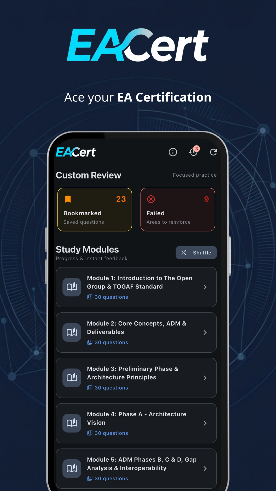
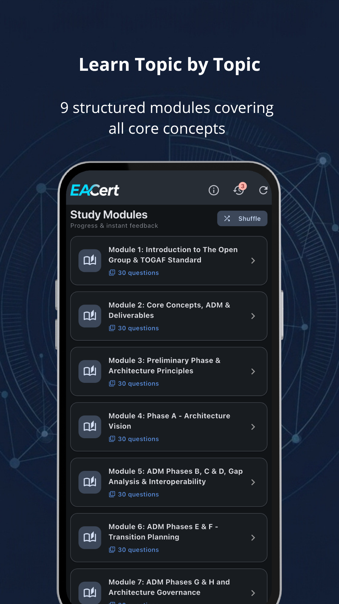
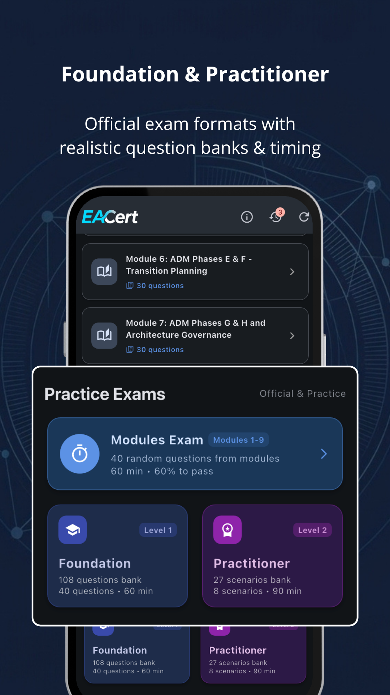
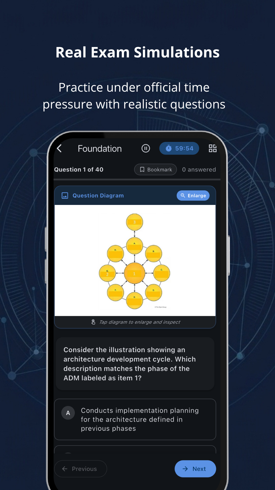
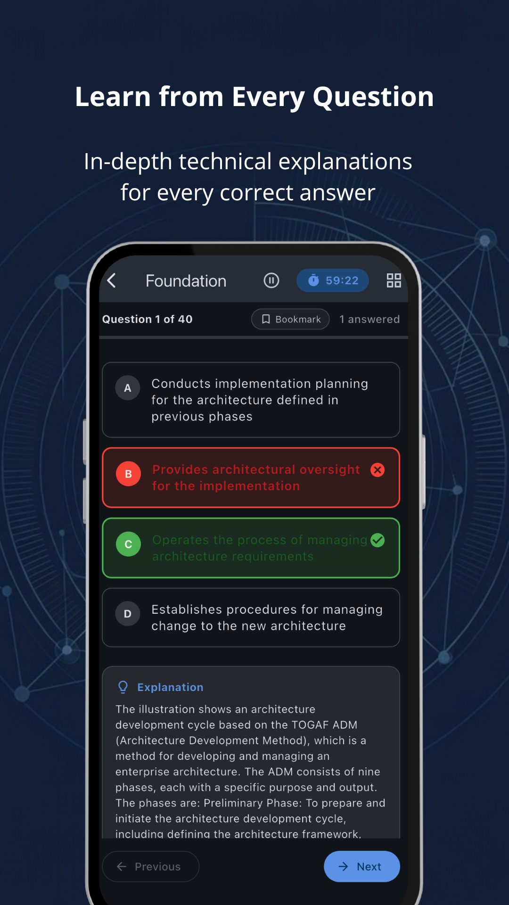

Prepara tu certificación
TOGAF® Foundation & Practitioner
EACert es una herramienta de estudio y autoevaluación independiente diseñada para ayudarte a dominar el estándar de Arquitectura Empresarial. Con más de 480 preguntas de práctica, 9 módulos estructurados, simulacros con tiempo y explicaciones razonadas con asistencia de IA.

Aviso Legal Importante sobre Marcas, No Afiliación Oficial y Fuentes de Contenido
TOGAF® es una marca registrada propiedad de The Open Group en los Estados Unidos y otros países. EACert es una aplicación formativa desarrollada de forma completamente independiente por Adrián Cantón Fernández para facilitar el estudio de las certificaciones TOGAF® Foundation y TOGAF® Practitioner. Esta aplicación NO es una aplicación oficial de The Open Group y NO está afiliada, autorizada, certificada ni respaldada por The Open Group.
Origen del Contenido: Las preguntas de práctica, supuestos de examen y explicaciones razonadas han sido generados con la asistencia de Inteligencia Artificial (IA) y/o recopilados de recursos públicos abiertos de la comunidad de estudio (como FreeCram entre otros bancos educativos abiertos) con fines exclusivamente didácticos y de autoaprendizaje personal. Se recomienda encarecidamente a los candidatos consultar las guías oficiales de The Open Group.
Preparación completa para los dos niveles TOGAF®
Tanto si te estás iniciando con la teoría del marco de trabajo como si buscas certificar tu capacidad de aplicar el ADM en entornos reales.
TOGAF® Enterprise Architecture Foundation
Diseñado para asegurar que comprendes el vocabulario común, los conceptos esenciales de la Arquitectura Empresarial y las fases del ciclo ADM.
- Preguntas tipo test de opción simple y múltiple con límite de tiempo
- Dominio completo de las Fases del ADM (Preliminar a la H)
- Conceptos de Gobernanza, Enterprise Continuum y Architecture Repository
- Entregables, Building Blocks (ABB y SBB) y puntos de vista
TOGAF® Enterprise Architecture Practitioner
Enfocado en evaluar tu capacidad para analizar escenarios complejos, aplicar el ADM a problemas de negocio reales y liderar la transformación técnica.
- Escenarios empresariales complejos con casos de estudio prácticos
- Sistema de puntuación gradual (5, 3, 1 o 0 puntos) replicando el examen oficial
- Análisis de brechas (Gap Analysis), matrices de interoperabilidad y riesgos
- Explicaciones razonadas asistidas por IA de la justificación de cada puntaje
9 Módulos de Estudio Estructurados
Organiza tu rutina de estudio cubriendo cada área fundamental del marco de trabajo según el programa oficial:
Introducción a los Estándares de Arquitectura Empresarial
Conceptos clave, beneficios de la Arquitectura Empresarial y estructura del estándar TOGAF®.
Conceptos Fundamentales, ADM y Entregables
Ciclo iterativo del ADM, artefactos, entregables y bloques de construcción (ABB y SBB).
Fase Preliminar y Principios de Arquitectura
Definición de principios, alcance de la arquitectura y establecimiento de la capacidad.
Fase A: Visión de la Arquitectura
Statement of Architecture Work, evaluación de preparación empresarial y mapa de interesados.
Fases B, C y D: Arquitecturas Centrales
Arquitectura de Negocio, Datos, Aplicaciones y Tecnología. Análisis de Brechas e interoperabilidad.
Fases E y F: Planificación de la Transición
Oportunidades, soluciones, arquitecturas de transición y hoja de ruta de implementación.
Fases G y H y Gobernanza de la Arquitectura
Gobernanza de implementación, contratos de arquitectura y gestión de cambios (Phase H).
Gestión de Requisitos
El núcleo transversal del ADM: trazabilidad, impacto y gestión continua de requisitos de negocio.
Contenido de la Arquitectura y Continuo Empresarial
Architecture Content Framework, metamodelo, Repository y clasificación de activos en el Enterprise Continuum.
Explora la Experiencia EACert
Capturas reales de la aplicación en Google Play: simulaciones contrarreloj, explicaciones razonadas, revisión de errores y modo oscuro.
Dashboard & Módulos

Simulador con Tiempo

Explicaciones Razonadas

Escenarios Practitioner

Historial & Revisión
Todo lo que necesitas para estudiar a tu ritmo
Diseñada con una experiencia de usuario rápida y sin fricción, pensada para arquitectos de software e ingenieros.
Simulacro Oficial y Práctica Guiada
Dos modalidades: simulador cronometrado con evaluación global al finalizar, o práctica guiada con feedback inmediato para aprender en cada pregunta.
Explicaciones con Asistencia IA
No memorices sin entender: cada opción cuenta con una explicación conceptual detallada basada en las directrices y entregables del estándar TOGAF®.
Marcadores y Revisión de Errores
Guarda preguntas difíciles para repasarlas antes del examen y accede al filtro exclusivo para reintentar solo las preguntas falladas.
Progreso, Historial y Constancia
Registra tus calificaciones anteriores, analiza tu evolución temporal y detecta con precisión qué módulos de estudio necesitas reforzar.
100% Modo Offline & Dark Mode
Todo el banco de preguntas funciona sin conexión a Internet. Diseñada con interfaz Material 3 y soporte completo para Modo Oscuro.
Privacidad Total (Sin Registro)
No solicitamos correo ni contraseñas. Financiada de forma transparente mediante publicidad de terceros (Google AdMob) para cubrir costes técnicos.
Comienza tu preparación hoy mismo
Descarga gratis EACert en Google Play Store y practica con más de 480 preguntas y casos para certificar en Arquitectura Empresarial.
Preguntas Frecuentes
¿La aplicación es oficial de The Open Group?
No. EACert es una herramienta de estudio independiente desarrollada por Adrián Cantón. TOGAF® es una marca registrada de The Open Group y no existe relación de patrocinio, afiliación ni certificación oficial por parte de dicha entidad.
¿De dónde proceden las preguntas y el contenido?
Las preguntas, casos y explicaciones razonadas han sido generadas con la asistencia de Inteligencia Artificial (IA) y recopiladas y adaptadas a partir de recursos formativos públicos y bancos de estudio abiertos de la comunidad (como FreeCram entre otros), con propósitos estrictamente didácticos de autoaprendizaje.
¿Qué incluye cada nivel (Foundation y Practitioner)?
El módulo Foundation (Nivel 1) cubre preguntas conceptuales tipo test sobre las fases del ADM, entregables y gobernanza. El módulo Practitioner (Nivel 2) incluye supuestos y escenarios basados en problemas prácticos con puntuación gradual (5, 3, 1 o 0 puntos) según las mejores prácticas de arquitectura empresarial.
¿Necesito registrarme o crear una cuenta?
No necesitas crear ninguna cuenta. No te solicitaremos nunca tu correo electrónico, contraseñas ni datos sensibles. Tu progreso y estadísticas se almacenan localmente en tu propio dispositivo móvil.
¿Dónde puedo consultar la política de privacidad?
Puedes leer la declaración completa en español e inglés en nuestra página de Política de Privacidad, donde se detalla el uso de Google AdMob y la ausencia de recopilación de datos personales.